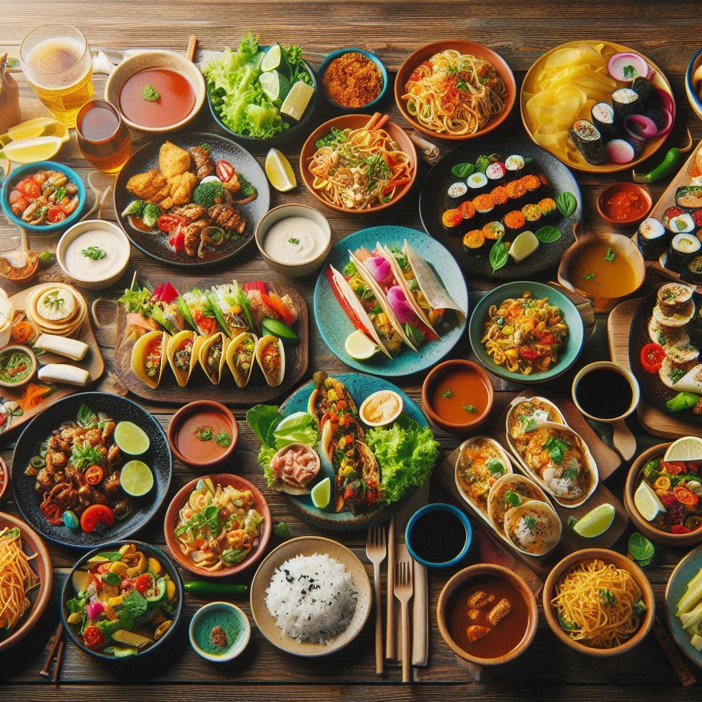

Aqui, celebramos a culinária caseira e as histórias que cada prato traz. Junte-se a nós para compartilhar suas receitas favoritas e descobrir delícias feitas por pessoas como você.
Ao se inscrever, você terá acesso a:
- Receitas Exclusivas: Aprenda truques e dicas para aprimorar suas habilidades culinárias.
- Desafios Mensais: Participe de desafios para criar pratos com ingredientes específicos e compartilhe suas criações.
- Comunidade Amiga: Conecte-se com outros amantes da culinária, troque experiências e inspire-se.
